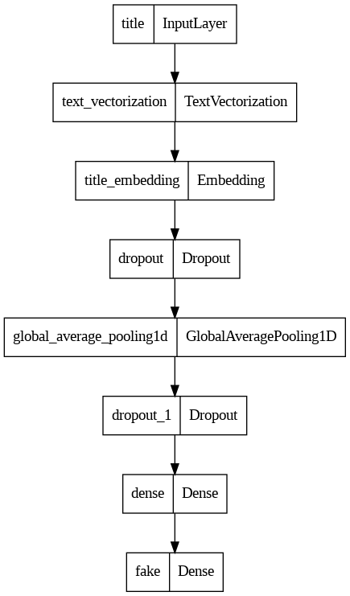
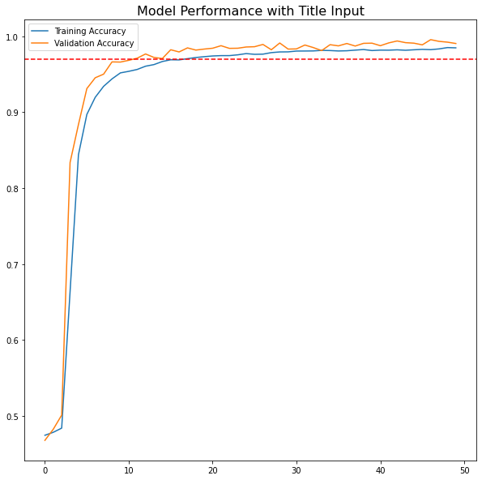
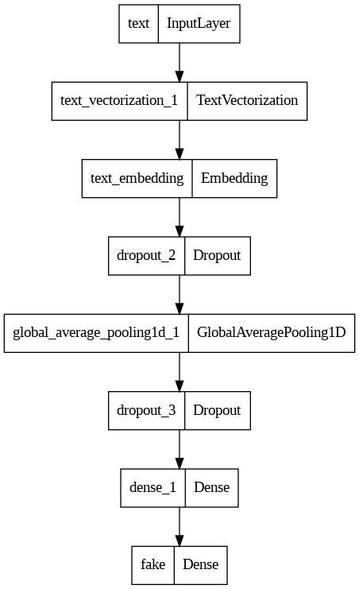
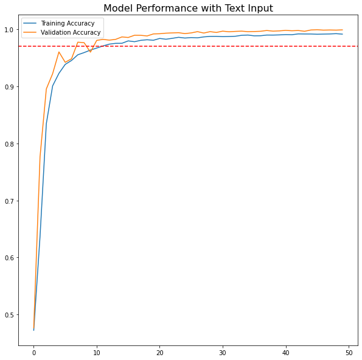
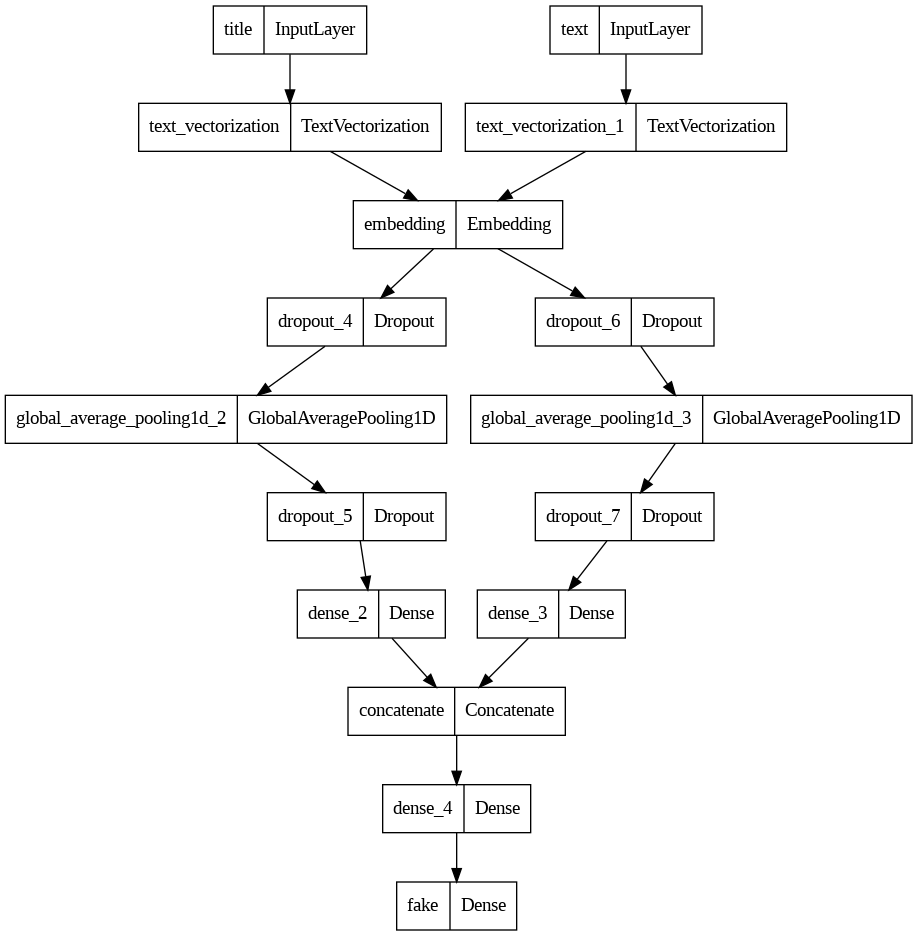
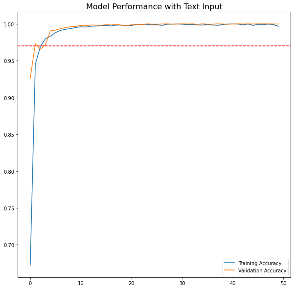
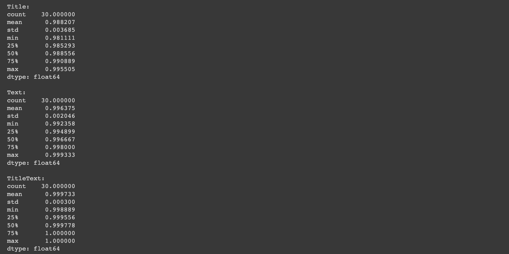
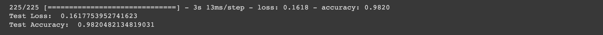
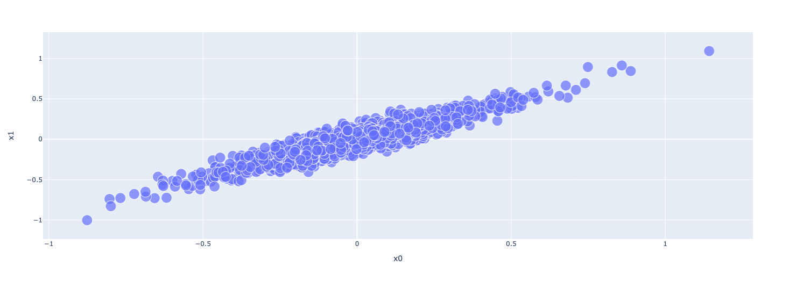

import pandas as pd
import numpy as npClassifying Fake News with TensorFlow
The purpose of this blog post is to dive deeper into the functionality of TensorFlow in building neural networks. This time, we will be looking into classifying articles as fake news depending on the article text, the title, or both.
Data Source
Let us first get the data necessary for the project. This dataset is originally from a research article:
- Ahmed H, Traore I, Saad S. (2017) “Detection of Online Fake News Using N-Gram Analysis and Machine Learning Techniques. In: Traore I., Woungang I., Awad A. (eds) Intelligent, Secure, and Dependable Systems in Distributed and Cloud Environments. ISDDC 2017. Lecture Notes in Computer Science, vol 10618. Springer, Cham (pp. 127-138).
They have publicized their data on Kaggle.
Another person (Phil Chodrow) has taken the liberty to process the data and host the data set in a URL for us to readily access. Below is the code to load in the necessary data, along with all the necessary packages we need for this project.
# load data
train_url = "https://github.com/PhilChodrow/PIC16b/blob/master/datasets/fake_news_train.csv?raw=true"
news_df = pd.read_csv(train_url)
news_df.columns = ['id', 'title', 'text', 'fake']news_df.head()| id | title | text | fake | |
|---|---|---|---|---|
| 0 | 17366 | Merkel: Strong result for Austria's FPO 'big c... | German Chancellor Angela Merkel said on Monday... | 0 |
| 1 | 5634 | Trump says Pence will lead voter fraud panel | WEST PALM BEACH, Fla.President Donald Trump sa... | 0 |
| 2 | 17487 | JUST IN: SUSPECTED LEAKER and “Close Confidant... | On December 5, 2017, Circa s Sara Carter warne... | 1 |
| 3 | 12217 | Thyssenkrupp has offered help to Argentina ove... | Germany s Thyssenkrupp, has offered assistance... | 0 |
| 4 | 5535 | Trump say appeals court decision on travel ban... | President Donald Trump on Thursday called the ... | 0 |
The data frame contains 4 columns: id, title, text, and fake. Here is what each variable represents:
id(int): A unique identifier for the articletitle(str): Title of the articletext(str): full body text of the articlefake(bool): whether or not the article is fake news (true label)
Processing the Data
Even though this dataset is cleaned up well, there are some more preprocessing steps that are needed before we can model the data. Since we are analyzing text data, we need to do two things:
- Remove stopwords from the article
textandtitle. A stopword is classified as any word that is common and uninformative for analysis, such as “and”, “but”, “or”, “the”. - Transform the dataset into one that can be read by
TensorFlow, which is done throughtf.data.Dataset.
We will create a function to automate these two processes.
import nltk
import tensorflow as tf
from tensorflow import keras
from tensorflow.keras import layers
nltk.download('stopwords')
from nltk.corpus import stopwords
def make_dataset(df, text_cols, response_var):
'''
creates a cleaned tensorflow dataset from a raw dataset.
@ inputs:
- df (pd.DataFrame): dataFrame containing columns of text data
- text_cols (str): column name(s) that represents text
- response_var (str): column name that represents the response variable
@ outputs:
- tfdf (tf.data.Dataset): output dataset with two inputs ((title, text)) and one output (fake).
'''
# gets stopwords from nltk.corpus library
stop = stopwords.words('english')
new_textcols = []
for col in text_cols:
new_colname = col + '_wo_stopwords'
new_textcols.append(new_colname) # new column name
# removes stopwords from text, joins it all together again.
df[new_colname] = df[col].apply(lambda x: ' '.join([word for word in x.split() if word not in (stop)]))
# creates a tensor dataframe from the processed text columns as input, and response var as output
tfdf = tf.data.Dataset.from_tensor_slices((
{
"title": df[[new_textcols[0]]],
"text": df[[new_textcols[1]]]
}, {
"fake": df[['fake']]
}
))
# speeds up performance
tfdf = tfdf.batch(100)
return tfdf2023-03-10 22:39:27.631067: I tensorflow/core/platform/cpu_feature_guard.cc:193] This TensorFlow binary is optimized with oneAPI Deep Neural Network Library (oneDNN) to use the following CPU instructions in performance-critical operations: SSE4.1 SSE4.2 AVX AVX2 FMA
To enable them in other operations, rebuild TensorFlow with the appropriate compiler flags.[nltk_data] Downloading package stopwords to
[nltk_data] /Users/joshuali/nltk_data...
[nltk_data] Package stopwords is already up-to-date!news_data = make_dataset(news_df, ['title', 'text'], 'fake')2023-03-10 22:39:55.202223: I tensorflow/core/platform/cpu_feature_guard.cc:193] This TensorFlow binary is optimized with oneAPI Deep Neural Network Library (oneDNN) to use the following CPU instructions in performance-critical operations: SSE4.1 SSE4.2 AVX AVX2 FMA
To enable them in other operations, rebuild TensorFlow with the appropriate compiler flags.Creating Validation Dataset
Now that we have the data in a compatible format, we can now take this training data, and split 20% of it for validation purposes in hopes to help improve performance on the unseen data.
# shuffles the data to ensure no ordering happens with splitting training and validation
news_data = news_data.shuffle(buffer_size = len(news_data))# 80% training data, 20% validation data
train_size = int(0.8*len(news_data))
val_size = int(0.2*len(news_data))
train = news_data.take(train_size) # data[:train_size]
val = news_data.skip(train_size).take(val_size) # data[train_size : train_size + val_size]Base Rate
Now, let us look at the base rate that we would like to hit in order to determine whether our model performance is poor or excellent. If our model just guesses one label (e.g. ‘fake’), the proportion will be the base rate. We want to do better than this.
for x, y in train.take(1):
print(y['fake'].numpy().sum())
print(len(y['fake'].numpy()))66
100fakes = 0
total = 0
# for inputs (x) and output (y) in train
for x, y in train:
# get number of fakes and total
fakes += y['fake'].numpy().sum()
total += len(y['fake'].numpy())
# get baseline rate
print((fakes/total))
print(total)0.5248203242520475
17949We can see that the base rate is around 52%. We need to get above this percent accuracy so that our model performs better than just guessing ‘fake’ all the time.
Text Vectorization
In addition to this, we also need to make sure that these words are able to be rendered into the model. The neural network model cannot evaluate strings, so we have to vectorize each word to map to an integer. Here is one of the examples that you can use for the data.
import re
import string
#preparing a text vectorization layer for tf model
size_vocabulary = 2000
def standardization(input_data): # word2vec
lowercase = tf.strings.lower(input_data)
no_punctuation = tf.strings.regex_replace(lowercase,
'[%s]' % re.escape(string.punctuation),'')
return no_punctuation
# vectorize layer
title_vectorize_layer = layers.TextVectorization(
standardize=standardization,
max_tokens=size_vocabulary, # only consider this many words
output_mode='int',
output_sequence_length=500)
# adapts to the title words
title_vectorize_layer.adapt(train.map(lambda x, y: x['title']))Creating Models
We will use this processed informations and layers to help create models to classify the integrity of the news article. We will create three different models:
- Using only the article title as an input.
- Using only the article text as an input.
- Using both the the article title and text as input.
1. Article Title Only
# base input that takes in Article Title
title_input = keras.Input(
shape=(1,),
name = "title", # same name as the dictionary key in the dataset
dtype = "string"
)title_features = title_vectorize_layer(title_input) # apply this "function TextVectorization layer" to lyrics_input
title_features = layers.Embedding(size_vocabulary, output_dim = 3, name="title_embedding")(title_features) # embeds words
title_features = layers.Dropout(0.2)(title_features) # prevent overfit
title_features = layers.GlobalAveragePooling1D()(title_features)
title_features = layers.Dropout(0.2)(title_features) # prevent overfit
title_features = layers.Dense(32, activation='relu')(title_features) # merge
# x -> f(x) -> f1(f(x)) -> ... -> fn(...f(x))output = layers.Dense(1, name="fake")(title_features) # output of 1 since binary# title model
title_model = keras.Model(
inputs = [title_input],
outputs = output
)title_model.summary()Model: "model"_________________________________________________________________ Layer (type) Output Shape Param # ================================================================= title (InputLayer) [(None, 1)] 0 text_vectorization (TextVec (None, 500) 0 torization) title_embedding (Embedding) (None, 500, 3) 6000 dropout (Dropout) (None, 500, 3) 0 global_average_pooling1d (G (None, 3) 0 lobalAveragePooling1D) dropout_1 (Dropout) (None, 3) 0 dense (Dense) (None, 32) 128 fake (Dense) (None, 1) 33 =================================================================Total params: 6,161Trainable params: 6,161Non-trainable params: 0_________________________________________________________________keras.utils.plot_model(title_model) # model architectureYou must install pydot (`pip install pydot`) and install graphviz (see instructions at https://graphviz.gitlab.io/download/) for plot_model to work.
title_model.compile(optimizer="adam",
loss = keras.losses.BinaryCrossentropy(from_logits=True), # binary classification
metrics=["accuracy"])#| id: hSp-ID4re9BV
#| colab: {base_uri: 'https://localhost:8080/'}
#| outputId: e3a4d60b-a850-4ca8-fa73-8a0fadc95b8d
title_history = title_model.fit(train,
validation_data=val,
epochs = 50,
verbose = False)#| id: fBdT6LJze-Ww
#| colab: {base_uri: 'https://localhost:8080/', height: 609}
#| outputId: fdb6cc9c-5420-4d03-e8b1-cd3c00400366
from matplotlib import pyplot as plt
def plot_val(history, threshold, figsize = (10, 10), title = 'Model Performance', fontsize = 16):
'''
plots the training and validation accuracy of a model
@ inputs:
- history: gets the log of all metrics recorded by epoch in the neural net model
- threshold (float): the accuracy to surpass
- figsize (tuple): len 2 tuple to denote dimensions of plot
- title (str): Title of plot
- fontsize (float): font size of title
@ outputs:
- shows plot of training and validation accuracy by epoch
'''
fig, ax = plt.subplots(1, figsize = figsize)
# plots accuracies as lines
ax.plot(history.history["accuracy"], label = 'Training Accuracy')
ax.plot(history.history["val_accuracy"], label = 'Validation Accuracy')
# marks the threshold accuracy
ax.axhline(y = threshold, c = 'red', ls = '--')
# Customization
ax.legend()
ax.set_title(title, fontsize = fontsize)
fig.show()
plot_val(title_history, 0.97, title = 'Model Performance with Title Input')
With the titles as the only input, the model performs extremely well in classifying the news article as fake or real news. The red line denotes the 97% accuracy line, which both the training and validation accuracy surpass over a number of epochs. There is no evidence of overfitting, as the validation accuracy consistently surpasses that of the training accuracy by a small margin.
2. Article Text Only
Now, we are going to look at a model that only takes text as the input. The process will be very similar as to the first model, but instead of inputting the title variable, we will use the text variable.
# base text input
text_input = keras.Input(
shape=(1,),
name = "text", # same name as the dictionary key in the dataset
dtype = "string"
)text_vectorize_layer = layers.TextVectorization(
standardize=standardization,
max_tokens=size_vocabulary, # only consider this many words
output_mode='int',
output_sequence_length=500)
# adapts vectorize layer to text words
text_vectorize_layer.adapt(train.map(lambda x, y: x['text']))text_features = text_vectorize_layer(text_input) # apply this "function TextVectorization layer" to lyrics_input
text_features = layers.Embedding(size_vocabulary, output_dim = 3, name="text_embedding")(text_features) # embed words
text_features = layers.Dropout(0.2)(text_features) # prevent overfitting
text_features = layers.GlobalAveragePooling1D()(text_features)
text_features = layers.Dropout(0.2)(text_features) # prevent overfitting
text_features = layers.Dense(32, activation='relu')(text_features)output = layers.Dense(1, name="fake")(text_features) # binary classification# text model
text_model = keras.Model(
inputs = [text_input],
outputs = output
)text_model.summary()Model: "model_1"_________________________________________________________________ Layer (type) Output Shape Param # ================================================================= text (InputLayer) [(None, 1)] 0 text_vectorization_1 (TextV (None, 500) 0 ectorization) text_embedding (Embedding) (None, 500, 3) 6000 dropout_2 (Dropout) (None, 500, 3) 0 global_average_pooling1d_1 (None, 3) 0 (GlobalAveragePooling1D) dropout_3 (Dropout) (None, 3) 0 dense_1 (Dense) (None, 32) 128 fake (Dense) (None, 1) 33 =================================================================Total params: 6,161Trainable params: 6,161Non-trainable params: 0_________________________________________________________________keras.utils.plot_model(text_model) # model architectureYou must install pydot (`pip install pydot`) and install graphviz (see instructions at https://graphviz.gitlab.io/download/) for plot_model to work.
text_model.compile(optimizer="adam",
loss = keras.losses.BinaryCrossentropy(from_logits=True), # binary classification
metrics=["accuracy"])#| id: RAAe1xlykWPa
#| colab: {base_uri: 'https://localhost:8080/'}
#| outputId: 2ccc3840-14d4-4392-ff32-44b9ff3d767f
text_history = text_model.fit(train,
validation_data=val,
epochs = 50,
verbose = False)#| id: E9jzEJS1kZM3
#| colab: {base_uri: 'https://localhost:8080/', height: 609}
#| outputId: 7ed8b00f-7623-4c1f-86ec-1aa930be2ddd
plot_val(text_history, 0.97, title = 'Model Performance with Text Input')
We see a very similar trend with using article text only to classify an article as fake news or real news. The validation and training accuracy both reach over 97% accuracy over a number of epochs, and the validation accuracy is consistently better than the training accuracy, which showcases that there is no presence of overfitting.
3. Both Article Title and Text
Now, we can use both title and text and evaluate its performance. Since we wrote variables for both models individually, we can reuse this code and just change the end to combine both models into one. To do this, we just need to use a layers.concatenate layer to add these two inputs together.
# title
title_input = keras.Input(
shape=(1,),
name = "title", # same name as the dictionary key in the dataset
dtype = "string"
)
# text
text_input = keras.Input(
shape=(1,),
name = "text", # same name as the dictionary key in the dataset
dtype = "string"
)
# share an embedding layer with 16 elements
shared_embedding = layers.Embedding(size_vocabulary, 16)title_features = title_vectorize_layer(title_input) # apply this "function TextVectorization layer" to lyrics_input
title_features = shared_embedding(title_features)
title_features = layers.Dropout(0.2)(title_features)
title_features = layers.GlobalAveragePooling1D()(title_features)
title_features = layers.Dropout(0.2)(title_features)
title_features = layers.Dense(32, activation='relu')(title_features)
text_features = text_vectorize_layer(text_input) # apply this "function TextVectorization layer" to lyrics_input
text_features = shared_embedding(text_features)
text_features = layers.Dropout(0.2)(text_features)
text_features = layers.GlobalAveragePooling1D()(text_features)
text_features = layers.Dropout(0.2)(text_features)
text_features = layers.Dense(32, activation='relu')(text_features)main = layers.concatenate([title_features, text_features], axis = 1)main = layers.Dense(32, activation='relu')(main)
output = layers.Dense(1, name="fake")(main)# title + text model
tt_model = keras.Model(
inputs = [title_input, text_input],
outputs = output
)tt_model.summary()Model: "model_2"__________________________________________________________________________________________________ Layer (type) Output Shape Param # Connected to ================================================================================================== title (InputLayer) [(None, 1)] 0 [] text (InputLayer) [(None, 1)] 0 [] text_vectorization (TextVector (None, 500) 0 ['title[0][0]'] ization) text_vectorization_1 (TextVect (None, 500) 0 ['text[0][0]'] orization) embedding (Embedding) (None, 500, 16) 32000 ['text_vectorization[1][0]', 'text_vectorization_1[1][0]'] dropout_4 (Dropout) (None, 500, 16) 0 ['embedding[0][0]'] dropout_6 (Dropout) (None, 500, 16) 0 ['embedding[1][0]'] global_average_pooling1d_2 (Gl (None, 16) 0 ['dropout_4[0][0]'] obalAveragePooling1D) global_average_pooling1d_3 (Gl (None, 16) 0 ['dropout_6[0][0]'] obalAveragePooling1D) dropout_5 (Dropout) (None, 16) 0 ['global_average_pooling1d_2[0][0 ]'] dropout_7 (Dropout) (None, 16) 0 ['global_average_pooling1d_3[0][0 ]'] dense_2 (Dense) (None, 32) 544 ['dropout_5[0][0]'] dense_3 (Dense) (None, 32) 544 ['dropout_7[0][0]'] concatenate (Concatenate) (None, 64) 0 ['dense_2[0][0]', 'dense_3[0][0]'] dense_4 (Dense) (None, 32) 2080 ['concatenate[0][0]'] fake (Dense) (None, 1) 33 ['dense_4[0][0]'] ==================================================================================================Total params: 35,201Trainable params: 35,201Non-trainable params: 0__________________________________________________________________________________________________keras.utils.plot_model(tt_model)You must install pydot (`pip install pydot`) and install graphviz (see instructions at https://graphviz.gitlab.io/download/) for plot_model to work.
tt_model.compile(optimizer="adam",
loss = keras.losses.BinaryCrossentropy(from_logits=True), # binary classification
metrics=["accuracy"])#| id: 2Vy4ZiqMqEiW
tt_history = tt_model.fit(train,
validation_data=val,
epochs = 50,
verbose = False)#| id: S35tT4KxqLaP
#| colab: {base_uri: 'https://localhost:8080/', height: 609}
#| outputId: 19dd5a3e-50fc-4914-89a5-48ab12b55382
plot_val(tt_history, 0.97, title = 'Model Performance with Text Input')
This model also performs insanely well, it seems that the training and validation accuracy both reach extremely closely to 100% accuracy. There is no overfitting in this case, but it does seem to be nearing a perfect classification.
Which one to use?
As you can see, all three of these models performed exceptionally well. Which one do we choose? In this case, I am going to be looking at the summary statistics for the validation accuracies for the last 30 epochs to see which one I would like to use.
#| id: IcsbBz86srfj
#| colab: {base_uri: 'https://localhost:8080/'}
#| outputId: 217480cb-8920-496b-e2c0-b67b73ecc4a1
print("Title:")
print(pd.Series(title_history.history['val_accuracy'][-30:]).describe())
print("\nText:")
print(pd.Series(text_history.history['val_accuracy'][-30:]).describe())
print("\nTitleText:")
print(pd.Series(tt_history.history['val_accuracy'][-30:]).describe()) We can see that the mean and the median are both at their peak with the model containing both the title and text information. The miniumum accuracy of the last model does not even go below 99.9% accuracy, which the other two models cannot even hit. Therefore, we will use the last model on the unseen test data in hopes of good performance.
Model Evaluation
Let us look at the performance on the unseen test data. The test data is downloaded as follows:
# load test data
test_url = "https://github.com/PhilChodrow/PIC16b/blob/master/datasets/fake_news_test.csv?raw=true"
test_news = pd.read_csv(test_url)
test_news.columns = ['id', 'title', 'text', 'fake']test_data = make_dataset(test_news, ['title', 'text'], 'fake')#| id: 2b0JzXvTv5dV
#| colab: {base_uri: 'https://localhost:8080/'}
#| outputId: c3b7fdd0-aeeb-496b-ad56-1af31d465029
test_loss, test_acc = tt_model.evaluate(test_data)
print('Test Loss: ', test_loss)
print('Test Accuracy: ', test_acc)
According to the test data, we are able to gain above 97% accuracy, which is amazingly good. It would be right about 97% of the time, which is helpful especially when it comes to misinformation.
Embedding Visualization
Now, we will look a bit deeper into the embedding layer for this model.
#| id: HUShOoyf440V
vocab = text_vectorize_layer.get_vocabulary() # keeps track of mapping from word to integer#| id: V_1Y1y-Z5Qxz
text_weights = tt_model.get_layer("embedding").get_weights()[0] # weights for embedding each of the 2000 words#| id: SHrs-Yxo5Z-5
#| colab: {base_uri: 'https://localhost:8080/'}
#| outputId: d749721a-93b6-4901-b553-feca3508c4ca
text_weights.shape#| id: i_2UBndX5XZN
from sklearn.decomposition import PCA
# https://scikit-learn.org/stable/modules/generated/sklearn.decomposition.PCA.html
# principal components analysis -
# project things to lower dimension such that the variance of the dataset is most preserved
pca = PCA(n_components=2)
weights = pca.fit_transform(text_weights)#| id: SoQgrX1D5fhX
embedding_df = pd.DataFrame({
'word': vocab,
'x0': text_weights[:, 0],
'x1': text_weights[:, 1]
}) # on PCA axes#| id: pfmVqcYR5kxq
#| colab: {base_uri: 'https://localhost:8080/', height: 542}
#| outputId: f1271819-bae4-48db-d6e8-06364184bc90
import plotly.express as px
fig = px.scatter(embedding_df,
x='x0',
y='x1',
size=[2]*len(embedding_df),
#size_max = 2,
hover_name = 'word'
)
fig.show()
From this visualization, we can see that the embedding goes to two different directions on the two major principal component axes. On the bottom left, we have words such as "gop", "rep", "reportedly". These touch upon politics (i.e. elections), but what ties these words together is this word "21wiretv". After doing some research, it is found that "21wiretv" is a journalism website that has a reputation of conspiracy theories and/or hoaxes. This leads me to believe that this side errs on fake news. On the other hand, we have terms such as "trumps", "obamas", "partys". It talks about politics, but particularly about presidents. We also see words like "opinions", which leads me to believe that this end is more about real news because they are willing to state opinion as opposed to deceive people by saying it is fact.
Conclusion
From this article, we have learned to process a dataset with text inputs so that it is fit for training through neural networks. We then learned how to use the functional API to create three different models. Then, we sought to interpret the embedding to see how the model learned how to classify fake news. This most definitely can be used for many other applications that use text, so go out and explore this world of working with text data!